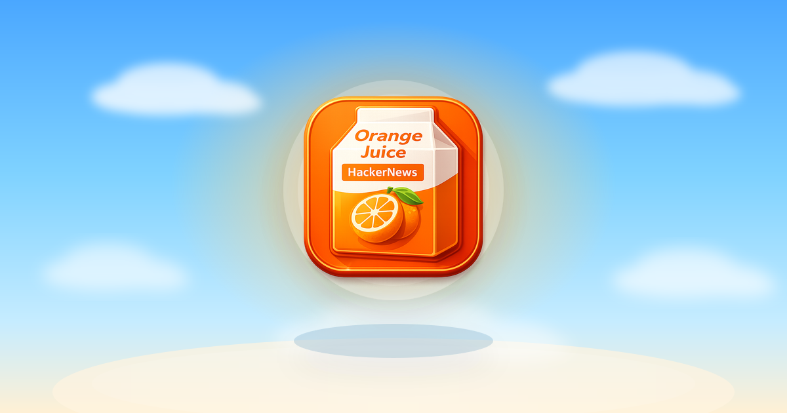
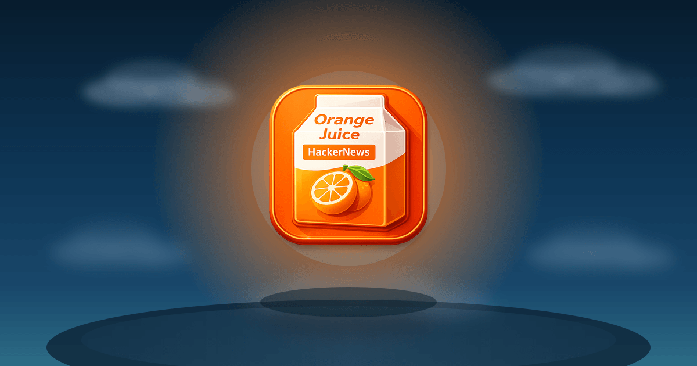
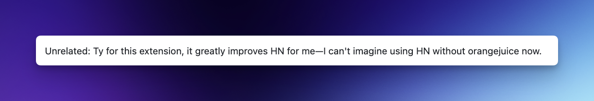
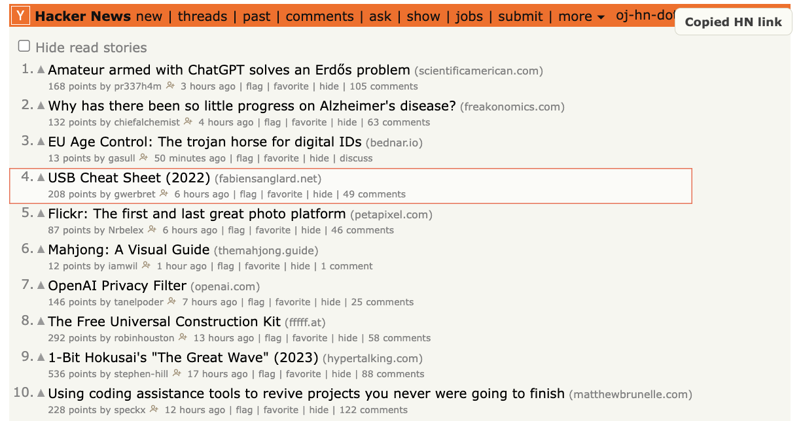
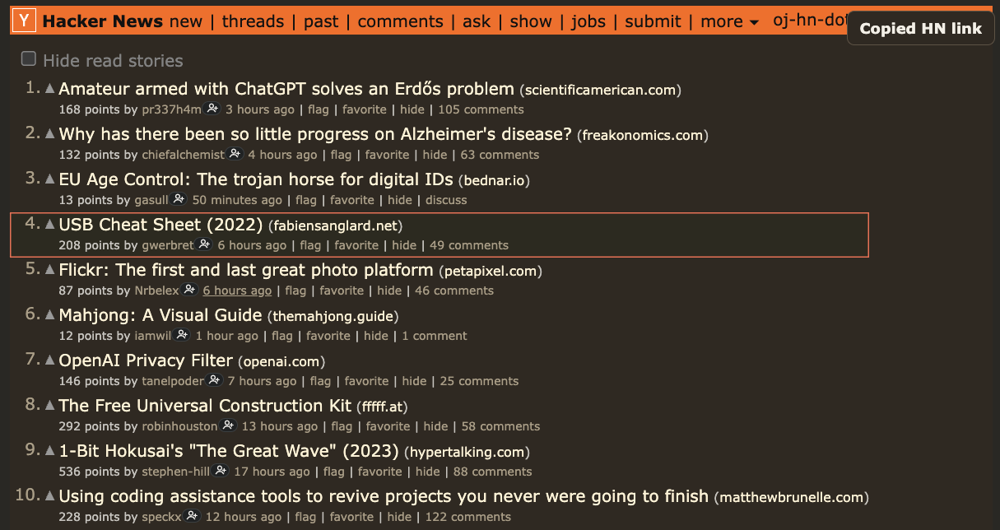

{kind=link}
In-Thread Replies
Stay in the thread
Inline reply and quote selection let you respond in place instead of jumping across pages.


Orange Juice Hacker News Browser ExtensionRead faster, reply in context, and keep your flow on Hacker News
Orange Juice does not replace Hacker News. It adds the quality-of-life features regular readers keep wishing were already there, so you can reply, catch up, and move through threads with less back-and-forth.
Orange Juice is built around small improvements that compound for people who actually spend time on Hacker News. This note from GitHub user regions99rockery gets to the point faster than any feature checklist.

If you already use Hacker News every day, Orange Juice gives you better ways to read and respond without changing the site you know. The value is simple: fewer extra clicks, clearer unread state, and faster replies when a thread is worth your time.
In-Thread Replies
Inline reply and quote selection let you respond in place instead of jumping across pages.
Unread Tracking
Unread comment highlighting and hide-read controls make it obvious what is new and what you already covered.
Favorites
Use keyboard commands to favorite stories and comments while reading so you can quickly find them again later.
Following
Follow HN users, open a combined activity feed, and mute noisy users so their comments fade into the background.
Keyboard Flow
Keyboard navigation and shortcuts help you scan stories, open threads, and act on content without breaking reading flow.
Readability
Dark mode, better code styling, and cleaner comment structure reduce friction when threads get deep or technical.
This is not a complete list of features, but it shows what we’re actively building and already delivering. Even this subset should make a strong case for installing Orange Juice.
Reply directly inside comment threads and quote selected text with one action.


Quickly spot what changed since your last visit without rescanning the entire thread.


Hover usernames to quickly preview profile details and context without leaving the thread.


Follow users from anywhere on HN and open a dedicated feed of their recent comments and submissions. Reorder users by dragging, collapse sections you do not want open by default, and refresh one person at a time without reloading everything else.
Small follow buttons appear next to usernames across Hacker News.
The /following page keeps the normal HN look
instead of inventing a separate UI.
Recent fetched activity is cached locally to keep the page fast, with per-user refresh controls when you want a fresh pull.
Clear out items you already opened and focus your attention on new stories.


Move through stories and comments faster with keyboard shortcuts, so you can browse without constant mouse movement.


Press y on an active story or comment to copy its
Hacker News permalink, then keep moving with a subtle confirmation
that stays out of the page flow.


Render Mermaid code blocks into readable diagrams directly in threads.


Render comment shortcodes like :heart: and
:+1:
as emoji while leaving code examples untouched.
And too many other features to list.
Orange Juice is designed to be trustworthy by default:
transparent code, clear licensing, and disciplined development.
The full source code is public under the GPLv3 license, so anyone can inspect how it works, verify behavior, and contribute improvements.
AI is used as a pair programmer to speed up implementation and review, but architecture and final decisions are human.
The extension has extensive unit test coverage, quality checks, and automation through CI/CD. This project is intentionally not vibe coded.
Available on Firefox Add-ons for a permanent, auto-updating installation.
Install for FirefoxThen load it into your browser:
chrome://extensions/
.zip
folder
about:debugging#/runtime/this-firefox
manifest.json
file from the extracted folder
{kind=link}
{kind=link}